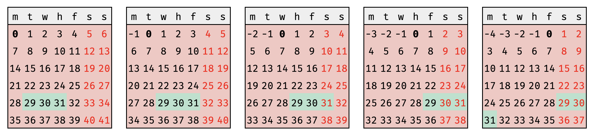

background
consider a trader who is backtesting a series of alphas that target the 30 DTE expiry on the S&P 500 Index options chain. to increase samples, the trader uses a window of +/- one day.
the trader considers the following:
in order to avoid adding complexity where unncessary, the trader starts to attack assumptions:
use an llm!
through the selectively biased lens of my day-to-day experiences, it seems increasingly more common to default to \(\textit{machine-first}\) thinking instead of \(\textit{human-first}\) thinking. stated another way, there seems to be an upward trend of \(\textit{outsourcing logic and reasoning}\).
for clarity, \(\textit{machine-first}\) thinking is not the same as \(\textit{machine-aided}\) thinking. in my mental model, \(\textit{machine-aided}\) is a subset of \(\textit{human-first}\):
of course, \(\textit{machine-first}\) thinking is represented in a reductive manner above; to capture the notion that a human supervises the \(\textbf{reasoning}\), let us expand the notation a bit:
the expression of \({C(1-\epsilon)\text{m}+\epsilon\text{h}}\) simply captures:
for example, one might say that someone who blindly accepts machine reasoning has \(\epsilon=0\):
furthermore, by definition, \(\textit{human-first}\) thinking blindly rejects machine reasoning i.e. \(\epsilon=1\):
while i am admittedly a staunch contrarian when it comes to the topic of LLMs, i do concede they have realized utility in some applications. my intention is not to debate the utility curve of LLMs; rather, i aim to invite deeper thinking about effects of human-LLM interactions.
\(\textit{outsourcing logic and reasoning}\) may be perfectly valid in some contexts, but not all contexts. what i worry about most is that continuous exposure to \(\textit{outsourcing logic and reasoning}\) in valid contexts erodes the human detection mechanism responsible for drawing that line in the first place.
as of writing, machines cannot reason from first-principles; therefore, humans must become more resilient in explicitly protecting the spaces in which \(\textit{outsourcing logic and reasoning}\) may lead to less than ideal outcomes. a serendipitous, cherry-picked personal example follows for those interested in virtually useless proofs.
virtually useless proof
if one were to take trading days \(T\) and weekends \(W\) as such: \begin{equation} T = \{0, 1, 2, 3, 4\} \end{equation} \begin{equation} W = \{5, 6\} \end{equation} if today \(t \in T\) and target DTE \(D\), one might observe that deriving day of the week \(d \in \{T\cup{W}\}\) for \(D\) is simply: \begin{equation} (t + D)\mod{7} = d \label{eq:dow} \end{equation} for 30\(\pm{1 DTE}\) strategies, one is never presented two equivalent choices for days-to-expiry in non-holiday conditions. using \eqref{eq:dow}, one observes when the possibility of a choice may arise: \begin{equation} d \in W \iff t \in \{3 , 4 \} \label{eq:iff} \end{equation} that is to say, a choice may only happen on Thursday or Friday. given, two choices: \(D_{-1}'\) and \(D_{+1}'\) representing 29 DTE and 31 DTE, respectively: \begin{equation} (3 + D_{-1}')\mod{7} = 4 \end{equation} \begin{equation} (3 + D_{+1}')\mod{7} = 6 \end{equation} \begin{equation} (4 + D_{-1}')\mod{7} = 5 \end{equation} \begin{equation} (4 + D_{+1}')\mod{7} = 0 \end{equation} thus, \(t=3\) is always presented \(D_{-1}'\) while \(t=4\) is always presented \(D_{+1}'\).
visual proof
using \(0\) to indicate the current trading day, there exists a nice visual proof; make note of when \(t=3\) (thursday) is the current day \((0)\) and \(t=4\) (friday) is the current day \((0)\).
closing thoughts
questioning assumptions and re-stating base truths often can combat misguided efforts, such as adding complexity where none is required. this is the essense of \(\textit{human-first}\) thinking that must continue to be protected in the age of \(\textit{outsourcing logic and reasoning}\).
as always, it is helpful to take a step back every now and then and ask,
\(\textit{why?}\)